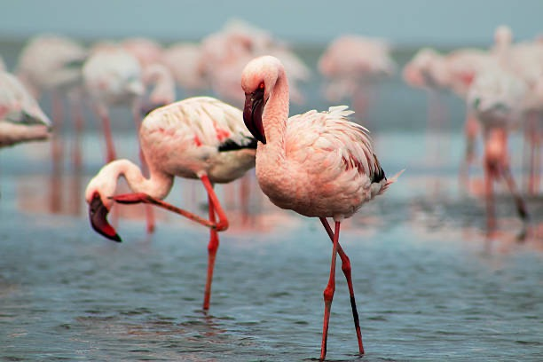

Bird Migration and Cyprus
The Greater Flamingo is one of the best known birds in Cyprus. Some years, thousands of birds spend the winter at the Akrotiri and Larnaka Salt Lakes, usually arriving in November and leaving again by the end of February. If the water levels are right (not too shallow and not too deep!) some Flamingos may stay longer and even spend the summer here, but none have nested successfully in Cyprus.
The male Greater Flamingo is larger than the female, but their plumage is the same. They are bright pink with bright red and black on their wings, which shows when they fly. Their long, long legs are also pink as is their big, bent bill, which has a black tip. Juvenile birds may take up to four years before they become pink. In the meantime, they are a 'dirty' brown-grey colour and can often be seen in the flocks of adults.
The level of the water in the Salt Lakes determines whether the Flamingos will stay in Cyprus, and also affects how many of them stay, Most of them come from few birds from France and Spain also appear. This we know from rings placed on the birds' legs by scientists after they hatch from their eggs in the countries where they nest.
Other birds such as the Greater Flamingo Phoenicopterus roseus migrate to Cyprus to spend the winter. They come here to feed on the shrimps and other creatures that live in the water of the Salt Lakes. They leave their breeding grounds in Turkey and Iran, where the winter can be very cold and lakes often freeze over.

Original Text